Chapter 11 Exercise Solutions
11.1 Introduction to R and Data Visualization Exercises
Exercise 1: Basic arithmetic
Create a variable called \(x\) and give it the value 15.Take the exponent of the variable and add 5 to the final result. Print the final result of \(x\).
## [1] 3269022Exercise 2: Vectors:
The weights of five people before and after a diet programme are given in the table below. Read the ‘before’ and ‘after’ values into two different vectors called before and after. Use R to evaluate the amount of weight lost for each participant. What is the average amount of weight lost?
| Before | 78 | 72 | 78 | 79 | 105 |
| After | 67 | 65 | 79 | 70 | 93 |
# Extract 'before' and 'after' weights into two vectors
before<-c(78,72,78,79,105)
after<-c(67,65,79,70,93)
# Calculate the amount of weight lost for each participant
weight_lost <- before - after
# Calculate the average amount of weight lost
average_weight_lost <- mean(weight_lost)
# Print the amount of weight lost for each participant and the average amount of weight lost
print(weight_lost)## [1] 11 7 -1 9 12## [1] "The average amount of weight lost: 7.6"Exercise 3: Matrices
Create two matrices called A and X defined below. \[ A= \begin{pmatrix} 1 & 4 & 7 \\ 2 & 5 & 8 \\ 3 & 6 & 10 \\ \end{pmatrix} \]
\[ X= \begin{pmatrix} 1&2&3\\ \end{pmatrix} \]
Find:
the product of A and X.
the transpose of A.
the determinant of A.
the diagonal of A.
the inverse of A.
## [,1]
## [1,] 30
## [2,] 36
## [3,] 45## [,1] [,2] [,3]
## [1,] 1 2 3
## [2,] 4 5 6
## [3,] 7 8 10## [1] -3## [1] 1 5 10## [,1] [,2] [,3]
## [1,] -0.6666667 -0.6666667 1
## [2,] -1.3333333 3.6666667 -2
## [3,] 1.0000000 -2.0000000 1Exercise 4: Creating Data Frames
Create a small data frame representing a database of films. It should contain the fields title, director, year, country, and at least three films.
Create a second data frame of the same format as above, but containing just one new film.
Merge the two data frames using rbind().
Try sorting the titles using sort(): what happens?
# Create the first data frame
films1 <- data.frame(
title = c("The Shawshank Redemption", "The Godfather", "The Dark Knight"),
director = c("Frank Darabont", "Francis Ford Coppola", "Christopher Nolan"),
year = c(1994, 1972, 2008),
country = c("USA", "USA", "USA")
)
# Create the second data frame with one new film
films2 <- data.frame(
title = c("Inception"),
director = c("Christopher Nolan"),
year = c(2010),
country = c("UK")
)
# Merge the two data frames using rbind
all_films <- rbind(films1, films2)
# Print the combined data frame
print(all_films)## title director year country
## 1 The Shawshank Redemption Frank Darabont 1994 USA
## 2 The Godfather Francis Ford Coppola 1972 USA
## 3 The Dark Knight Christopher Nolan 2008 USA
## 4 Inception Christopher Nolan 2010 UK## [1] "Inception" "The Dark Knight"
## [3] "The Godfather" "The Shawshank Redemption"Exercise 5: Factors and Simple plot
Suppose we have the heights of 100 individuals, where the first are 50 male and the rest female. Generate 100 fixed random numbers from a normal distribution where the mean height of male is 170 while that of female is 160 with an equal standard deviation of 10 and call that vector as ‘height’. Create another vector called ‘sex’ with two entries ‘M’ and ‘F’ each replicated 50 times. Tell R to treat ‘sex’ as a categorical variable and name it as ‘Sex’. Plot Sex against height using plot() function. Which type of plot have you obtained? What happens if you try to plot sex against height instead?
set.seed(1442) # fixes the random numbers
height = round(rnorm(100, mean=rep(c(170,160),each=50), sd=10))
sex = rep(c("M", "F"), each=50)
# treat sex as a categorical variable
Sex = as.factor(sex)
plot(Sex, height)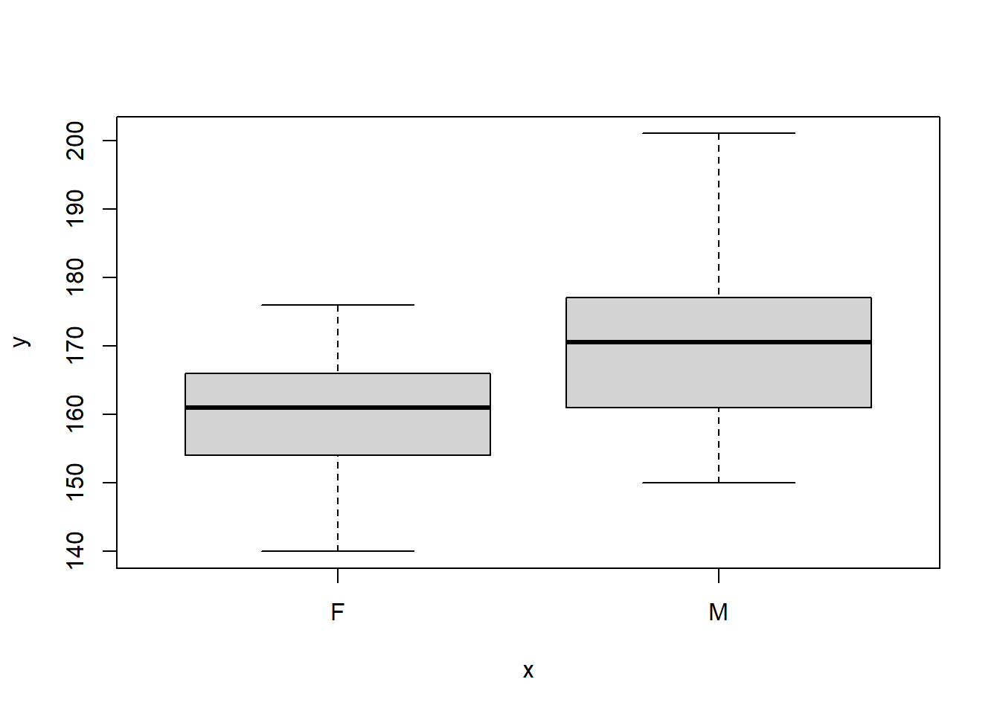
## Warning in xy.coords(x, y, xlabel, ylabel, log): NAs introduced by coercion## Warning in min(x): no non-missing arguments to min; returning Inf## Warning in max(x): no non-missing arguments to max; returning -Inf## Error in plot.window(...): need finite 'xlim' values
11.2 R Base Graphics Exercises
Exercise 6
Create a dataframe of marks of 1000 students (male and female) with their respective status i.e pass if marks >= 40, fail otherwise (set a seed to 100). Additionally, let the student marks be graded using factor method in the following format:
A: 70 marks and above
B: 60-69
C: 50-59
D: 40-49
E: Below 40 marks
Create a dataframe called students with the vectors; id, gender, marks, grade and status where status is a column which shows whether the student passed or failed.You will use this dataframe to answer exercise 7,8 and 9.Note: The minimum mark should be 10 marks
#Solution
id<-1:1000
set.seed(100)
marks<-sample(c(10:100),1000, replace = TRUE)
gender<-sample(c("Male","Female"),1000,replace = TRUE)
grade<-factor(c(marks >=0)+ (marks >=40) + (marks >=50) + (marks >=60) +(marks >=70), labels=c("E","D","C","B","A"))
status<-factor(c(marks >=0)+ (marks >=40), labels=c("Fail","Pass"))
students<-data.frame(id, gender,marks, grade, status)Exercise 7
Plot a box plot to show the distribution of marks by gender.Give it a title, ‘Distribution of Student Marks’. The x-axis should be labelled as ‘Gender’ while the y-axis should be labelled as ‘Marks’. Apply blue color to male and green color to female. Set cex.main and cex.lab to 1.2.
# Solution
id<-1:1000
set.seed(100)
marks<-sample(c(10:100),1000, replace = TRUE)
gender<-sample(c("Male","Female"),1000,replace = TRUE)
grade<-factor(c(marks >=0)+ (marks >=40) + (marks >=50) + (marks >=60) +(marks >=70), labels=c("E","D","C","B","A"))
status<-factor(c(marks >=0)+ (marks >=40), labels=c("Fail","Pass"))
students<-data.frame(id, gender,marks, grade, status)
# Customized box plot with different colors, labels, and larger font sizes
boxplot(marks ~ gender, data = students, col = c("green", "blue"), main = "Distribution of Student Marks", xlab = "Gender", ylab = "Marks", cex.main = 1.2, cex.lab = 1.2)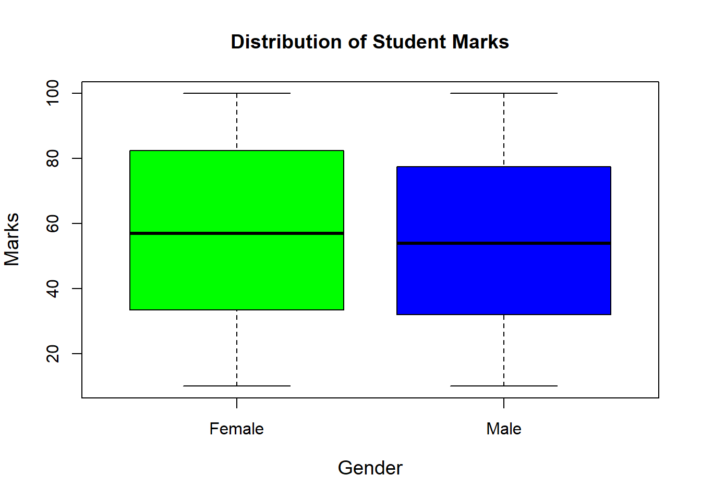
Exercise 8
Plot a histogram of the marks where the bins should be equivalent to the classes of grading. Which grade had the highest number of students? How were the marks distributed in the class? Fill the histogram with red. Add a customized title and label the axes.
# Solution
# Create the students dataframe
id <- 1:1000
set.seed(60)
marks <- sample(10:100, 1000, replace = TRUE)
gender <- sample(c("Male", "Female"), 1000, replace = TRUE)
grade <- factor(c(marks >= 0) + (marks >= 40) + (marks >= 50) + (marks >= 60) + (marks >= 70), labels = c("E", "D", "C", "B", "A"))
status <- factor(c(marks >= 0) + (marks >= 40), labels = c("Fail", "Pass"))
students <- data.frame(id, gender, marks, grade, status)
# Define breaks based on the grading classes
breaks <- c(0, 40, 50, 60, 70, 100)
# Create the histogram
hist(students$marks, breaks = breaks, col = "red",
main = "Distribution of Marks by Grade",
xlab = "Marks", ylab = "Number of Students")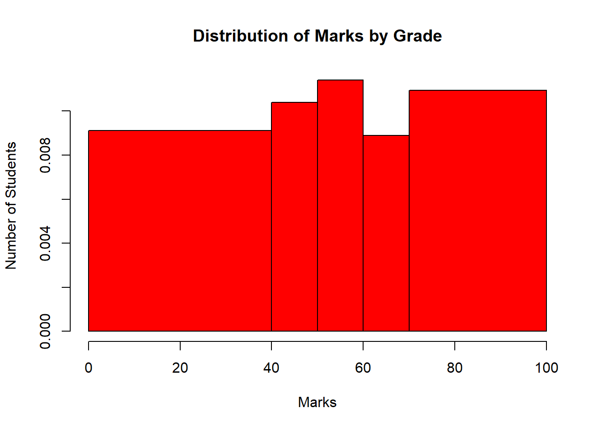
# Count the number of students in each grade
grade_counts <- table(students$grade)
print(grade_counts)##
## E D C B A
## 345 116 110 96 333# Determine the grade with the highest number of students
highest_grade <- names(which.max(grade_counts))
cat("The grade with the highest number of students is:", highest_grade, "\n")## The grade with the highest number of students is: EExercise 9
Use a well customized barpot to show the mean mark of students by gender. Which gender had the highest average score?
# Solution
# Create the students dataframe
id <- 1:1000
set.seed(100)
marks <- sample(10:100, 1000, replace = TRUE)
gender <- sample(c("Male", "Female"), 1000, replace = TRUE)
grade <- factor(c(marks >= 0) + (marks >= 40) + (marks >= 50) + (marks >= 60) + (marks >= 70), labels = c("E", "D", "C", "B", "A"))
status <- factor(c(marks >= 0) + (marks >= 40), labels = c("Fail", "Pass"))
students <- data.frame(id, gender, marks, grade, status)
# Calculate the mean marks by gender
mean_marks_by_gender <- aggregate(marks ~ gender, data = students, mean)
# Plot the barplot
barplot(mean_marks_by_gender$marks,
names.arg = mean_marks_by_gender$gender,
col = c("blue", "pink"),
main = "Mean Marks by Gender",
xlab = "Gender",
ylab = "Mean Marks",
ylim = c(0, 100),
beside = TRUE,
border = "black",
las = 1, # make axis labels perpendicular to axis
cex.names = 1.2, # adjust the size of the axis labels
cex.axis = 1.2, # adjust the size of the axis text
cex.main = 1.5, # adjust the size of the main title
cex.lab = 1.2) # adjust the size of the axis labels text
# Add text labels on top of the bars
text(x = c(1, 2),
y = mean_marks_by_gender$marks,
label = round(mean_marks_by_gender$marks, 1),
pos = 3, # position above the bars
cex = 1.2, # adjust the size of the text
col = "black")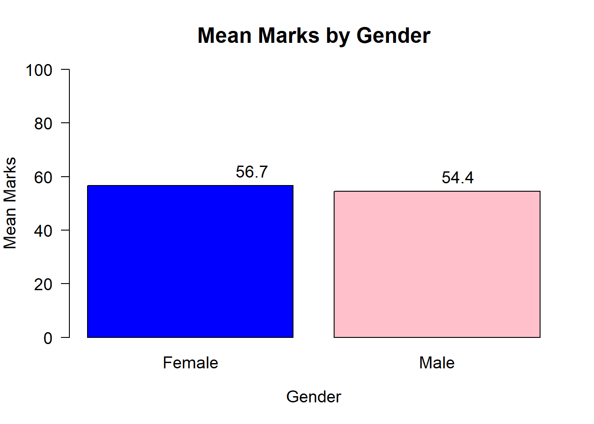
# Determine which gender had the highest average score
highest_avg_gender <- mean_marks_by_gender[which.max(mean_marks_by_gender$marks), ]
cat("The gender with the highest average score is:", highest_avg_gender$gender, "with an average score of", round(highest_avg_gender$marks, 1), "marks", "\n")## The gender with the highest average score is: Female with an average score of 56.7 marks11.3 Data Structures Relevant to Visualization Exercises
Exercise 10
You have been provided with a snapshot of a fictional retail landscape, capturing essential attributes that drive retail operations and customer interactions. It includes key details such as Transaction ID, Date, Customer ID, Gender, Age, Product Category, Quantity, Price per Unit, and Total Amount. The dataset can be downloaded from Kaggle via the link https://www.kaggle.com/datasets/mohammadtalib786/retail-sales-dataset. Import the data into R and answer the following questions:
i). Using a well customized line plot, what trend do you see in the sales (Total Amount)?
library(ggplot2)
library(dplyr)
csv_url<-"https://github.com/balsaedi/-R-Visualization/raw/c818a85e72ba605d27434c4fff23c56caa8e2299/retail_sales_dataset.csv"
retail_sales_data<-read.csv(csv_url)
# Convert the Date column to Date type if it isn't already and rename the Total.Amount
retail_sales_data<-retail_sales_data%>%
mutate(Date=as.Date(Date,format ="%Y-%m-%d"))%>%
rename(Total_Amount=Total.Amount)
# Aggregate sales by date
sales_trend <- retail_sales_data %>%
group_by(Date) %>%
summarise(Total_Amount = sum(Total_Amount, na.rm = TRUE))
# Plot the sales trend
ggplot(sales_trend, aes(x = Date, y = Total_Amount)) +
geom_line(color = "blue") +
labs(title = "Sales Trend Over Time",
x = "Date",
y = "Total Sales Amount") +
theme_bw() +
theme(plot.title = element_text(hjust = 0.5))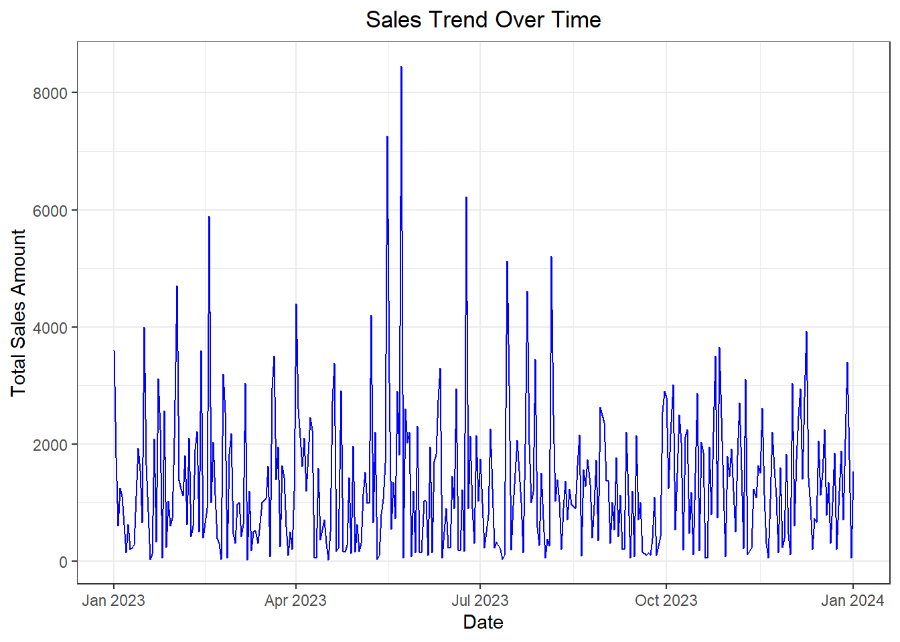
ii). Using an appropriate plot covered so far, show how the total amount vary by the product category. Use a well customized plot to make it more appealing and readable.
library(ggplot2)
library(dplyr)
csv_url<-"https://github.com/balsaedi/-R-Visualization/raw/c818a85e72ba605d27434c4fff23c56caa8e2299/retail_sales_dataset.csv"
retail_sales_data<-read.csv(csv_url)
# Convert the Date column to Date type if it isn't already and rename the Total.Amount
retail_sales_data<-retail_sales_data%>%
mutate(Date=as.Date(Date,format ="%Y-%m-%d"))%>%
rename(Total_Amount=Total.Amount, Product_Category=Product.Category)
# Aggregate sales by product category
sales_by_category <- retail_sales_data %>%
group_by(Product_Category) %>%
summarise(Total_Amount = sum(Total_Amount, na.rm = TRUE))
# Plot the sales by product category with labels
ggplot(sales_by_category, aes(x = reorder(Product_Category, -Total_Amount), y = Total_Amount, fill = Product_Category)) +
geom_bar(stat = "identity") +
geom_text(aes(label = round(Total_Amount, 1)), vjust = -0.5, size = 3) + # Adding labels
labs(title = "Total Sales Amount by Product Category",
x = "Product Category",
y = "Total Sales Amount") +
theme_bw() +
theme(plot.title = element_text(hjust = 0.5),
axis.text.x = element_text(angle = 45, hjust = 1)) +
scale_fill_brewer(palette = "Set3") # You can change the palette to your preference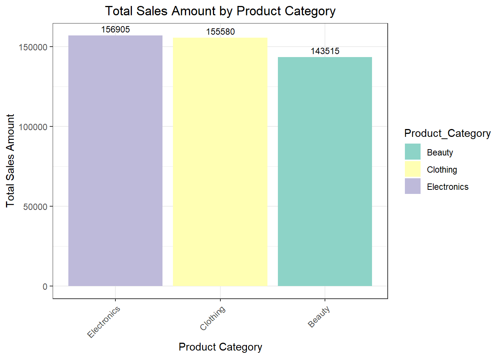
11.4 Customizing Graphs in Base R Exercises
Exercise 11
Read the cabbages dataset from MASS package. Remove the duplicated values of “HeadWt” and arrange the dataframe in descending order by “HeadWt” column. Plot a line plot of “HeadWt” against its square and apply blue color with the first line type. Add a second line plot of the square of cube of “HeadWt” , apply the red color and the line type should be the second one. Add a legend to the plot and position it at the top - left position with the names “Square of Head Weight” and “Cube of Head Weight” respectively. Maintain the same line types and colors that were used to plot. Add a title, ‘Comparison of Cabbage Trends’. Label the x-axis as ‘Head Weight’ and y-axis should be blank
# Solution
library(dplyr)
library(MASS)
cabbages <- cabbages %>%
distinct(HeadWt, .keep_all = TRUE) %>%
arrange(desc(HeadWt),FALSE)
plot(cabbages$HeadWt,(cabbages$HeadWt)^2,type = 'l', col='blue',
lty=1,main = "Comparison of Unique Cabbage Trends", xlab = "Head Weight", ylab = "")
lines(cabbages$HeadWt,(cabbages$HeadWt)^3,type = 'l', col='red', lty=2)
legend("topleft", legend = c("Square of Head Weight", "Cube of Head Weight "), col = c("blue", "red"), lty = c(1, 2))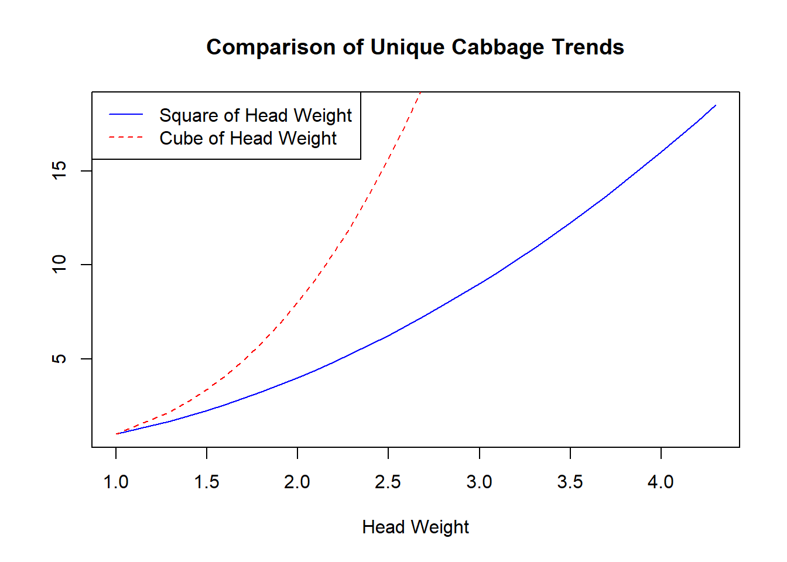
Exercise 12 : Multiple Small Plots in One Graphic to Compare Different Data Sets
Create a vector x of a sequence of numbers from 1 to 100. Create another vector y1 which is the square of x. Create another vector y2 which is the double of x. Lastly, create the last vector y3 which is equivalent to x raised to the power of 1.5. Create three multiple small line plots and organize them in one row with three columns. All plots will use the same independent variable in the x-axis, i.e x.
- Plot x against y1. Give it the title,‘Trend 1’, x-axis should be labelled as ‘X’ while y-axis=‘Y’ and color is blue.
- Plot x against y2. Give it the title,‘Trend 2’, x-axis should be labelled as ‘X’ while y-axis=‘Y2’,col is red.
- Plot x against y3. Give it the title,‘Trend 3’, x-axis should be labelled as ‘X’ while y-axis=‘Y3’,col is green.
#Solution
#Create data
x <- 1:100
y1 <- x^2
y2 <- 2 * x
y3 <- x^1.5
# Create multiple small plots
par(mfrow = c(1, 3)) # 1 row, 3 columns
# Plot 1
plot(x, y1, type = "l", col = "blue", main = "Trend 1", xlab = "X", ylab = "Y")
# Plot 2
plot(x, y2, type = "l", col = "red", main = "Trend 2", xlab = "X", ylab = "Y2")
# Plot 3
plot(x, y3, type = "l", col = "green", main = "Trend 3", xlab = "X", ylab = "Y3")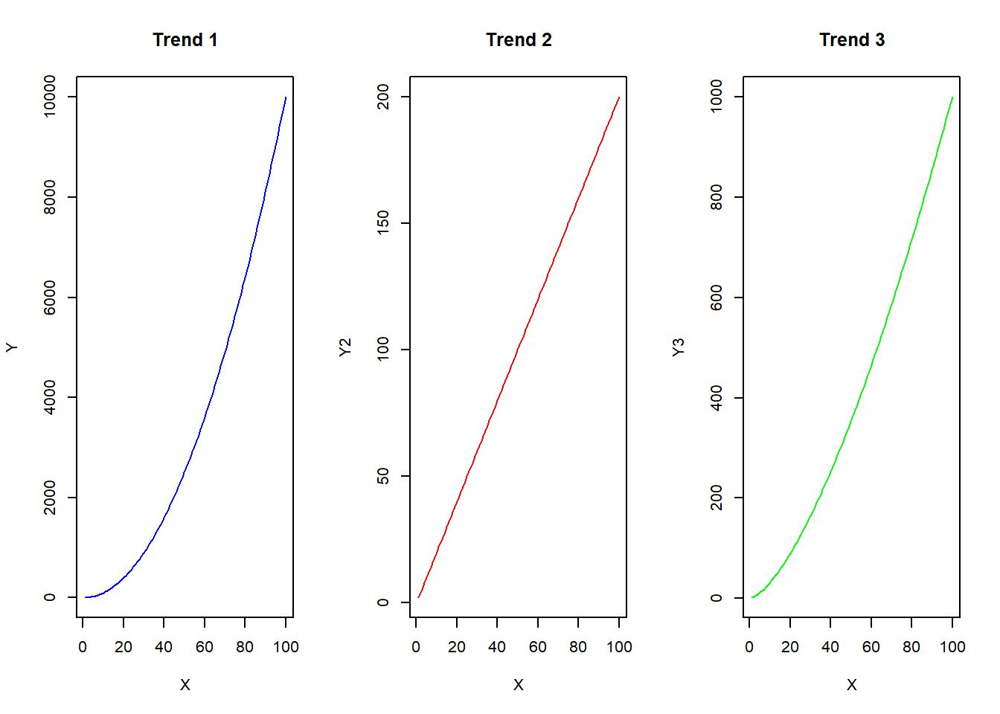
- Repeat the above similar plots but arranged in three rows and one column using mfcol().
#Solution
#Create data
x <- 1:100
y1 <- x^2
y2 <- 2 * x
y3 <- x^1.5
# Create multiple small plots
par(mfcol = c(3, 1)) # 3 rows, 1 column
# Plot 1
plot(x, y1, type = "l", col = "blue", main = "Trend 1", xlab = "X", ylab = "Y")
# Plot 2
plot(x, y2, type = "l", col = "red", main = "Trend 2", xlab = "X", ylab = "Y2")
# Plot 3
plot(x, y3, type = "l", col = "green", main = "Trend 3", xlab = "X", ylab = "Y3")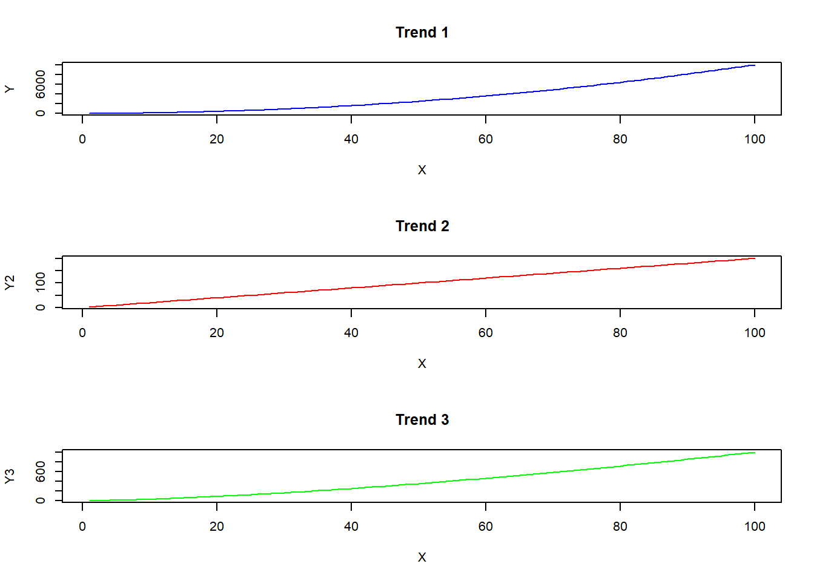
11.5 Time Series Exercises
Exercise 13: Stock market data
Obtain the daily closing prices for the last ten calendar years of S&P 500 Index, Dow Jones, NASDAQ100 and Russell 2000 indices from Yahoo Finance using the appropriate R package such as tidyquant or quantmod. Prepare the data and clean it by removing any missing values. Plot a time series plot of the prices of these indices in one graph and use the plot to identify any economic trends among the indices.
# Solution
# Ensure the environment is clean by restarting the R session
rm(list = ls())
# Load necessary packages
library(tidyquant)
library(tidyverse)
library(lubridate)
# Define the stock indices and the date range
indices <- c("^GSPC", "^DJI", "^NDX", "^RUT") # S&P 500, Dow Jones, NASDAQ 100, Russell 2000
index_names <- c("^GSPC" = "S&P 500", "^DJI" = "Dow Jones", "^NDX" = "NASDAQ 100", "^RUT" = "Russell 2000")
start_date <- Sys.Date() - years(10) # the date of 10 years ago from today
end_date <- Sys.Date() # today
# Get the data
stock_data <- tq_get(indices, from = start_date, to = end_date)
# Clean the data and rename the symbols
stock_data_clean <- stock_data %>%
dplyr::select(symbol, date, adjusted) %>%
drop_na() %>%
mutate(symbol = recode(symbol, !!!index_names))
# Plot the data
stock_data_clean %>%
ggplot(aes(x = date, y = adjusted, color = symbol)) +
geom_line() +
labs(title = "Daily Closing Prices of Major Stock Indices (Last 10 Years)",
x = "Date", y = "Adjusted Closing Price",
color = "Index") +
theme_bw() +
theme(legend.position = "bottom",
plot.title = element_text(hjust = 0.5))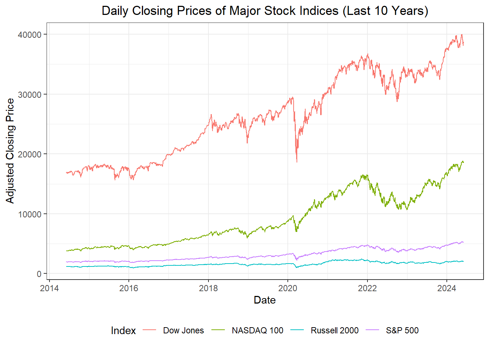
Exercise 14: Temperature
Obtain the temperature data from an open source such as Weather data (https://www.wunderground.com/weather/in/ahmedabad/VAAH) for Ahmedabad which is located in Western India on the banks of River Sabarmati. Obtain the average monthly temperature data from Sardar Vallabhbhai Patel International Airport Station weather station for the years 2014-2021. Decompose the time series data by splitting these components (data or the level, trend, seasonality, and noise or random components) separately into individual components. Present the decomposition of the multiplicative model of the components of the time series of the average temperature of Ahmedabad in a suitable plot. What observation did you make about the seasonality of this data?
#Solution
# Load the packages
library(readxl)
library(httr)
library(tidyverse)
library(xts)
library(tseries)
library(fpp)
# Define the URL of the Excel file
url <- "https://github.com/balsaedi/-R-Visualization/blob/766543496caaccbdc25aca38be9741b4c4195b57/Ahmedabad%20Temperature.xlsx?raw=true"
# Download the file to a temporary location
temp_file <- tempfile(fileext = ".xlsx")
GET(url, write_disk(temp_file, overwrite = TRUE))## Response [https://raw.githubusercontent.com/balsaedi/-R-Visualization/766543496caaccbdc25aca38be9741b4c4195b57/Ahmedabad%20Temperature.xlsx]
## Date: 2024-06-05 16:47
## Status: 200
## Content-Type: application/octet-stream
## Size: 11.3 kB
## <ON DISK> C:\Users\USER\AppData\Local\Temp\RtmpSQUFEs\file3d382b1b3303.xlsx# Read the Excel file into R
Temperature<-read_excel(temp_file)
colnames(Temperature)<-c("Time","Maximum","Average","Minimum")
#Select only the Time and Average columns
Temperature<-Temperature%>%
dplyr::select(Time,Average)
# Convert the dataframe to a time series object
Average_Temperature<-xts(Temperature[,"Average"], order.by = as.Date(Temperature$Time))
# Multiplicative Time series decomposition.
Average_ts<-ts(Average_Temperature, frequency = 12)
average_decomposition<-decompose(Average_ts,"multiplicative")
autoplot(average_decomposition)+theme_bw()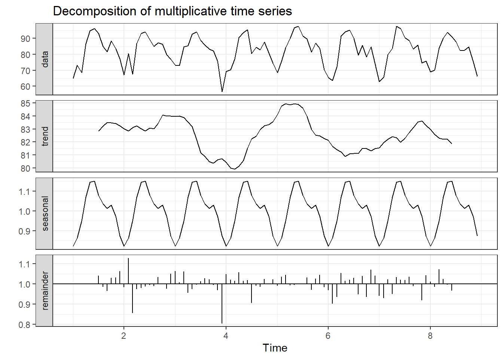
11.6 Statistical Graphs Exercises
Exercise 15
Create a box plot that compares the distribution of Sepal Length across the three species in the iris dataset.
# Solution
# Create a box plot comparing Sepal.Length across different species
ggplot(data = iris, aes(x = Species, y = Sepal.Length, fill = Species)) +
geom_boxplot() +
labs(title = "Box Plot of Sepal Length by Species",
x = "Species", y = "Sepal Length") +
theme_bw()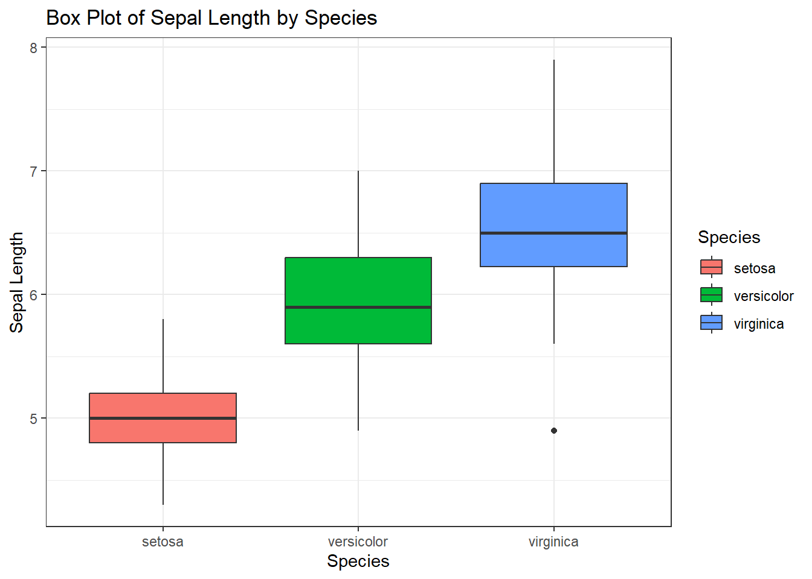
Exercise 16
Generate a random health dataset of 100 people (male and female) from a normal distribution with the three variables: Age,BMI and Gender. The mean of Age should be 50 with a stand deviation of 10. The mean of BMI should be 25 with a standard deviation of 4. Gender should have only two values; “Male” and “Female”. Set random seed to a value of 123 and name the data frame as health_dataset. Create a scatter plot that examines the relationship between Age and BMI in the simulated health dataset. Include a linear regression line with the linear regression equation and the value of Adjusted R-Squared to highlight the trend.
# Solution
# Simulate health data
set.seed(123)
health_data <- data.frame(
Age = rnorm(100, mean = 50, sd = 10),
BMI = rnorm(100, mean = 25, sd = 4),
Gender = sample(c("Male", "Female"), 100, replace = TRUE)
)
# Create a scatter plot to examine the relationship between Age and BMI
plot(health_data$Age, health_data$BMI,
main = "Scatter Plot and Regression Line ",
xlab = "Age", ylab = "BMI",
col = "blue")
# Fit linear regression model
model <- lm(Age ~ BMI, data = health_data)
# Adding regression line
abline(model, col = "red")
# Adding regression equation
eq <- paste("y =", round(coef(model)[1], 2), "+", round(coef(model)[2], 2), "x")
text(50.5, 37.5, eq, pos = 4)
# Adding confidence intervals
conf_interval <- predict(model, interval = "confidence")
lines(health_data$BMI, conf_interval[, "lwr"], col = "green", lty = 2)
lines(health_data$BMI, conf_interval[, "upr"], col = "green", lty = 2)
# Add legend
legend("topleft", legend = c("Data Points", "Regression Line", "Confidence Intervals"),
col = c("blue", "red", "green"), lty = c(NA, 1, 2), lwd = c(NA, 1, 1),
pch = c(1, NA, NA), bty = "o" # Enclose the legend in a box
)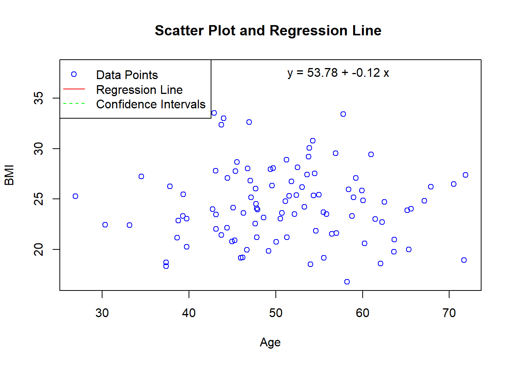
11.7 GGPLOT2 Exercise
Exercise 17
Obtain a global dataset on internet usage trends.You might find the dataset datasets from Kaggle. Clean and preprocess the dataset to ensure it’s in a suitable format for visualization. This may involve handling missing values, aggregating data by regions or countries, and calculating relevant metrics. Use ggplot2 to create visualizations that showcase global internet usage trends over time. Use a scatter plot to show the relationship between income per person and internet usage rate across all the countries. You may access the data file here which was downloaded from Kaggle and uploaded to GitHub for easier accessibility.
#Solution
internet_url<-"https://github.com/balsaedi/-R-Visualization/raw/main/gapminder_internet.csv"
# Read the csv file
internet_data<-read.csv(internet_url)
# Scatter plot with facets
ggplot(internet_data, aes(x = incomeperperson, y = internetuserate)) +
geom_point() +
# facet_wrap(~ country) +
labs(title = "Relationship between Income per Person and Internet Usage Rate",
x = "Income per Person (GDP per capita)",
y = "Internet Usage Rate (per 100 people)",
subtitle = "Across the Globe") +
theme_bw()+
theme(plot.title = element_text(hjust = 0.5),
plot.subtitle = element_text(hjust = 0.5))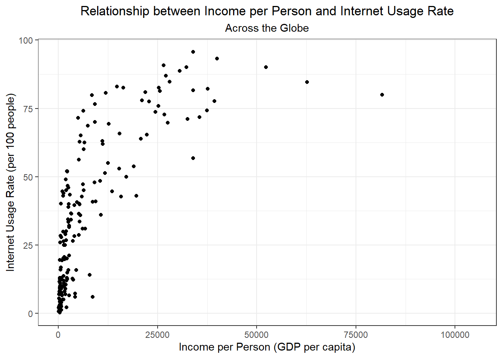